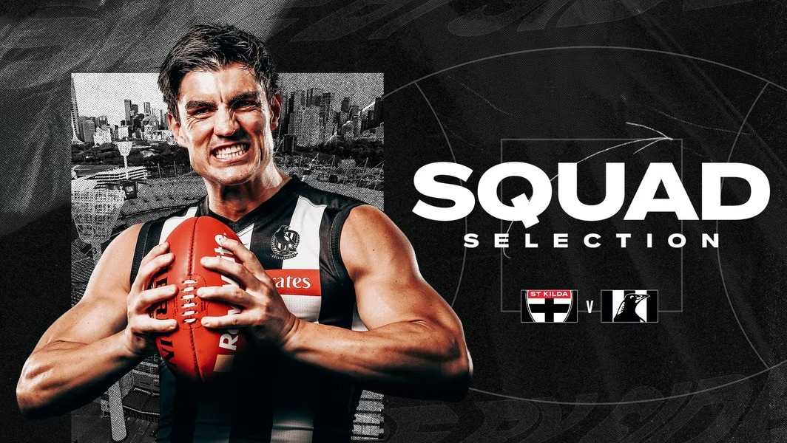
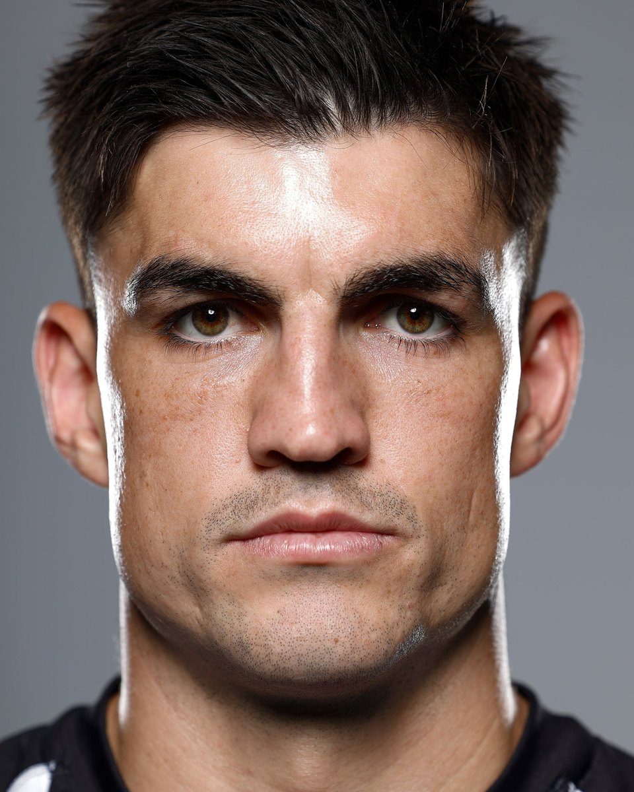
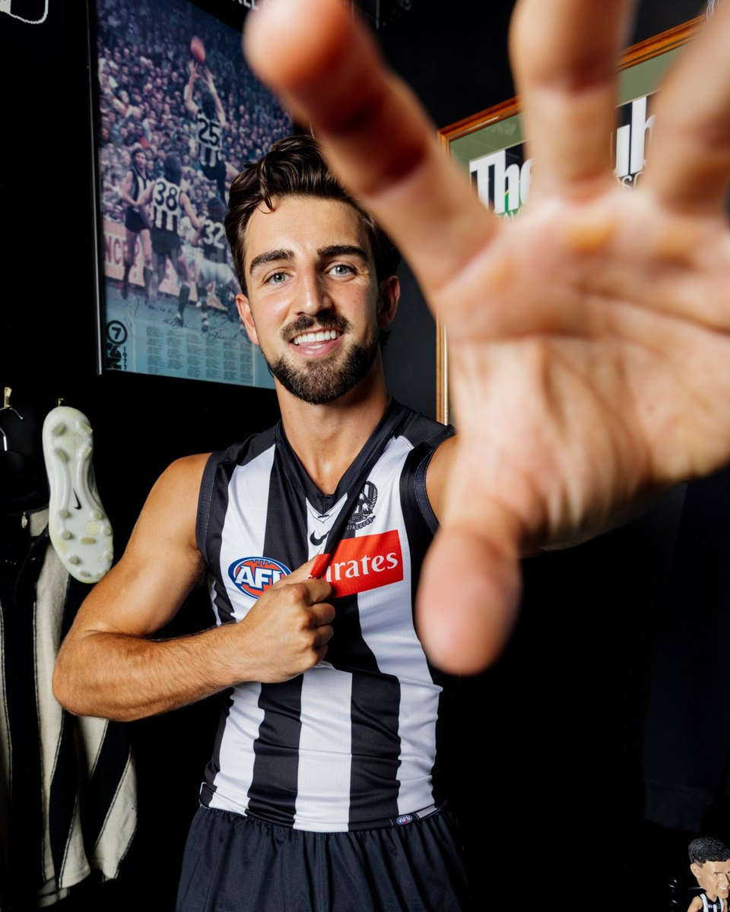
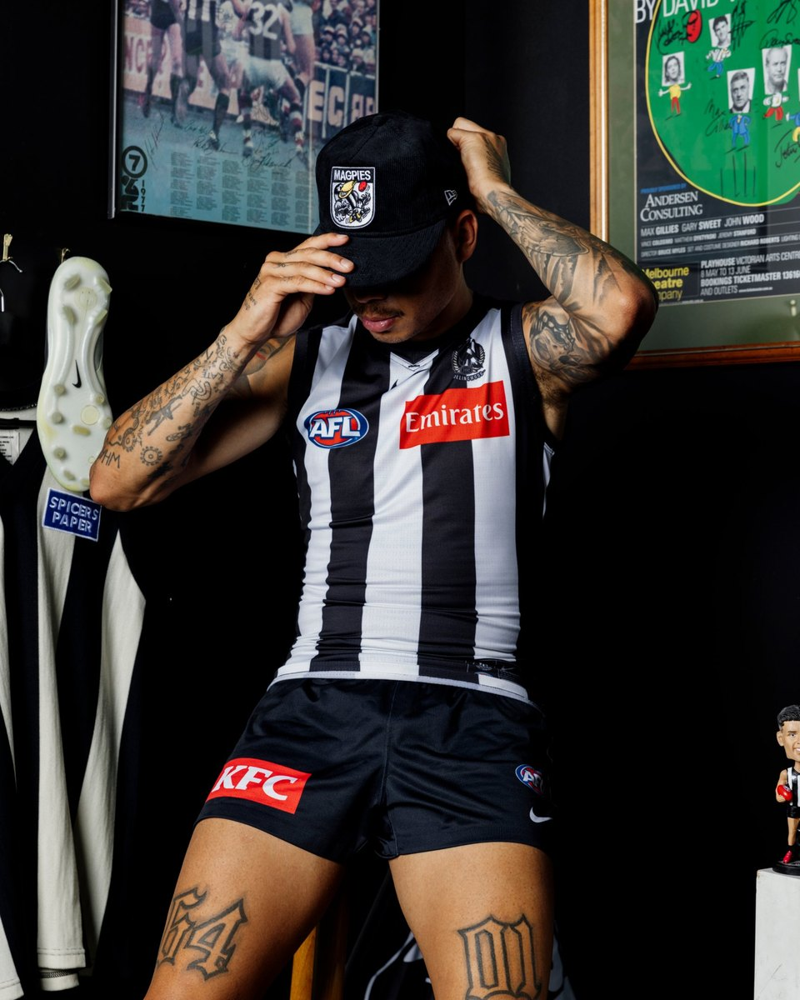

01 / Go Pies.
Collingwood Football Club
Official work created during my two and a half years as Senior Graphic Design / Design Manager at Collingwood Football Club, bringing the club's unmistakable black-and-white identity to life across brand, campaign, digital, events, print and the match-day experience.
Art direction · Brand strategy · Digital · Print · Environment
01 / The big picture
Artwork placeholder
Feature artwork to be added
The direction
Built for the feed.
The most engaged assets. A selection of digital and social media assets, bringing player announcements, match results and standout performances together through bold typography, layered imagery and a consistent black-and-white visual language.



The shoot
Made for the camera.
Player photography for the club's content. Tight, square-on studio headshots built for symmetry, and a lifestyle set shot among Collingwood memorabilia.





